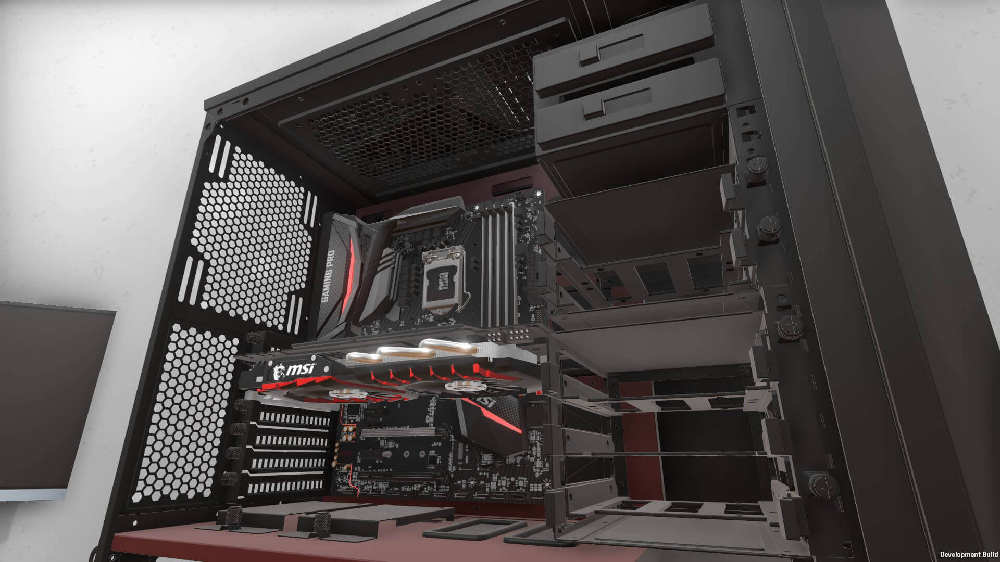

Een van mijn hobby's is het bouwen van custom build pc's, mijn passie hiervoor is gekomen omdat toen ik klein was ik mij altijd afvroeg
waarom
mijn spelletjes op de computer zo traag waren, hierdoor ben ik doorheen de jaren gaan zoeken wat computer
componenten zijn en hoe ik een
computer in elkaar moest klussen
Voortaan maak ik nu ook voor vrienden en kennissen custom builds wanneer ik tijd heb.

Een andere hobby van mij is fietsen, sinds ik klein was ging ik altijd met mijn ouders fietsen in de zomer,
ook
al wordt het nu minder gedaan, toch is fietsen een moment gebleven waar ik me even op niets moet concentreren.
Sinds de start van mijn opleiding ben ik steeds meer geintreseerd geraakt in het bouwen van
servers waarop
ik services kan aanbieden aan vrienden en famillie, zo heb ik al een vpn server
opgezet om het thuisnetwerk
altijd te kunnen berijken en heb ik nog vele plannen voor wanneer mijn famillie naar spanje zou emigreren.
Wegens mijn vorige opleiding heb ik een passie gekregen voor automatisatie en IOT,
dankzij de opleiding die ik nu volg kan ik deze passie beter realiseren omdat
ik nu met
mijn gekregen kennis van netwerken en systemen deze mooi kan laten samenvloeien
met
mijn eletrische kennis waardoor ik leuke projecten kan uitvoeren,
ook had ik altijd al een grote interessen in "Single Board Computers".
| Homepagina |
| Over mezelf |
| Hobby's |
| CV |
| Ervaring |
| Contact |